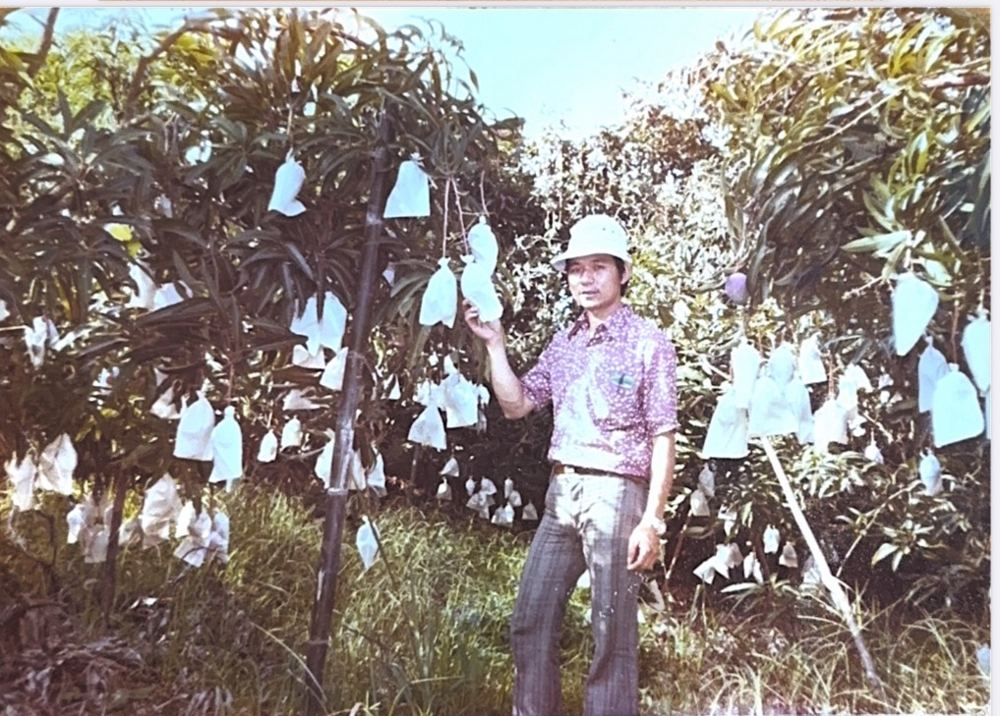
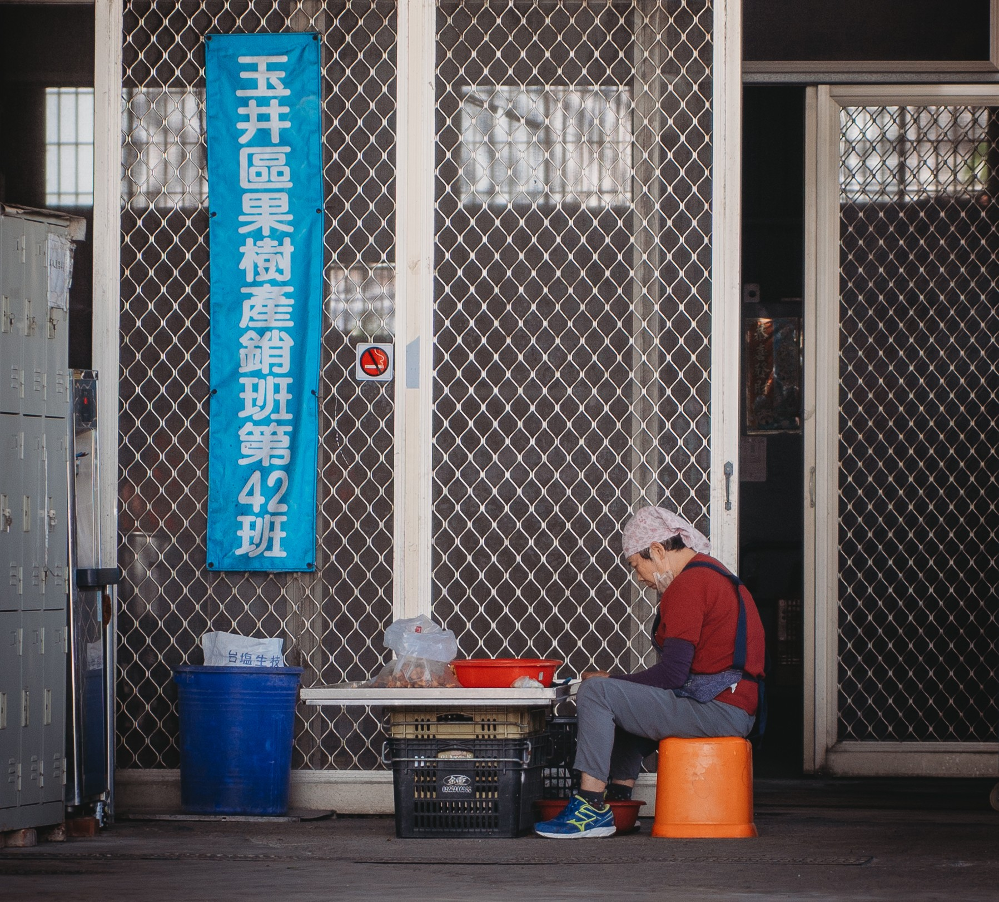

童年與果園
蔡⾦松出生於台南玉井的芒果農村，是四兄妹中的老三。
西元1965年，父母引進愛文芒果後，
開始嘗試種植這項當時相當新鮮的作物，
他自小就在果園間跑跳，幫忙澆水、搬運、除草，
雖然只是童工般的小幫手，但在耳濡目染之下，
他漸漸理解務農並非只靠勞力，更需要細心觀察、
耐心等待與不怕失敗的精神。
務農的挑戰
學生時期結束後，蔡⾦松毅然選擇回到果園幫忙，
學習當時從美國引進的種植技術。
颱風肆虐、氣候變遷與病蟲害，常讓一年的辛苦付諸流水，收成好的時候，果園熱鬧忙碌，
收成差的時候，心情也難免跟著低落。
即便如此，蔡⾦松依舊堅持，
他深知農業的價值不是短期利益，
而是與土地長期相伴的關係，勤奮與耐心，
成了他最珍貴的資本。
另一條路
為了讓家庭生活更穩定，蔡⾦松先在農會任職，後來因表現受到肯定，被推薦進入青果合作社，負責水果收購與外銷。
當時玉井的芒果逐漸打響名號，
他不僅協助收購農民的心血，也參與芒果行銷與外銷的推動，讓家鄉的果實漂洋過海，走向日本與大陸。
合作社的工作雖繁重，但三十多年來，他始終堅守崗位，
讓收入穩定支撐起一家人的生活，也在無形中推動了地方農業的發展。
家與土地的傳承
蔡⾦松與吳榮秀因長輩牽線而結識，婚後兩人共同經營家庭與果園，雖然平日裡合作社的工作十分忙碌，但只要有空，他一定會回到田間，照顧父母留下的芒果樹。
對他來說，這片土地不僅僅是經濟來源，更是承載著家族記憶與情感的所在。
從兒時的遊戲場，到成年後的責任與傳承，果園見證了蔡⾦松一生的努力與守護。
如今，芒果園依舊枝葉繁盛，像一段綿延不斷的故事，將勤奮與堅持的精神，傳承給下一代。


